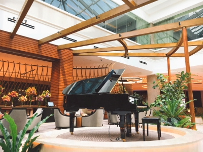
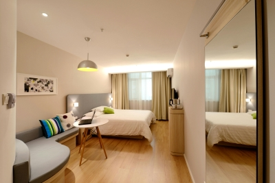
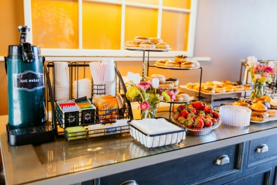

Where Nature and Comfort Meet
Nestled among whispering birch trees, Burch Tree Inn offers a peaceful retreat from the everyday. With soft mountain air and the scent of pine drifting through open windows, it's the perfect place to unwind and reconnect with nature.
A Peaceful Experience
Our rooms blend rustic charm with modern comfort — handcrafted wood furnishings, cozy linens, and views of the surrounding forest make every stay feel timeless. In the evenings, guests can gather around our lobby and enjoy the gentle melodies from our grand piano, a centerpiece of the inn's serene and welcoming atmosphere.
Simplicity at its Finest
Each morning begins with a homemade breakfast featuring local ingredients, served fresh in our dining room overlooking the woods. Whether you're here for a weekend getaway or a quiet escape, Burch Tree Inn invites you to slow down, breathe deep, and feel at home in the heart of nature.